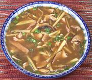

|
Hot & Sour Pork Soup - SichuanChina - Sichuan - Suan la rou si tang | ||||
| Serves: Effort: Sched: DoAhead: |
6 soup ** 1 hr Yes |
Unlike many, this hot & sour soup is made hot with pepper (black or white) rather than chilis. Pepper was widely used in China before the barbarians (that's us) brought chili peppers. Lots of ingredients, but easy to make. | |||
|
8 ------ 1/2 1/4 2-1/2 2-1/2 ------ 5 5 3 4 ------ 1 3 1 1 1 1 5 1/3 1 5 3/4 1 4 |
oz --- T t t t --- oz oz oz --- in t T t t T c T c t t T |
Lean Pork -- Marinade Rice Wine Salt Cornstarch Cold Water -- Mushroom mix Mushroom, dried Bamboo Shoot (1) Mushroom, white Ham, cooked (2) ------------- Ginger Scallions Sesame Oil Rice Wine (3) Soy Sauce, light Soy Sauce, dark Cornstarch Water Lard or Oil (4) Stock Salt Pepper (5) Vinegar, black (6) |
Prep - (45 min)
|